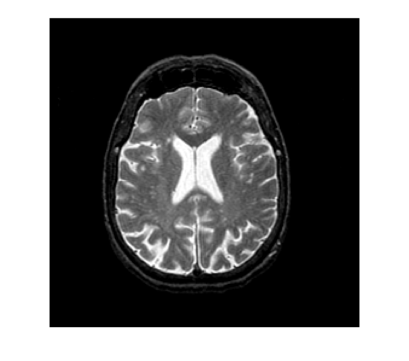
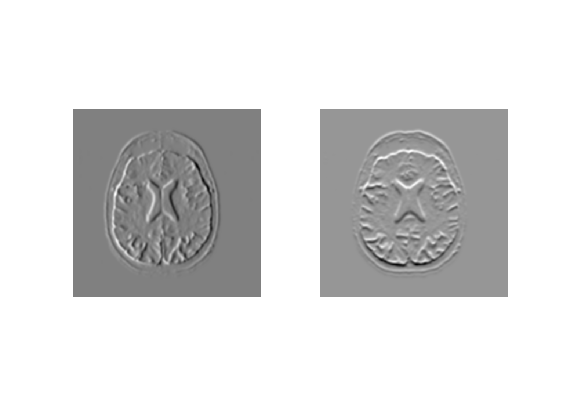
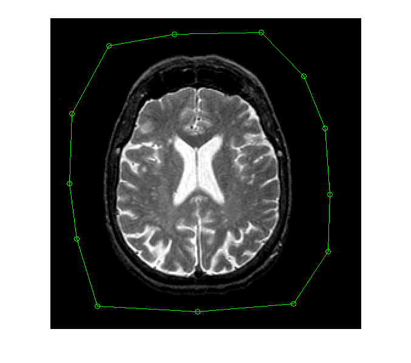
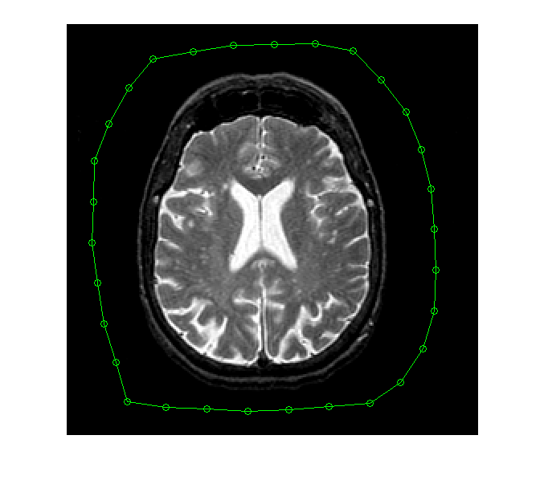
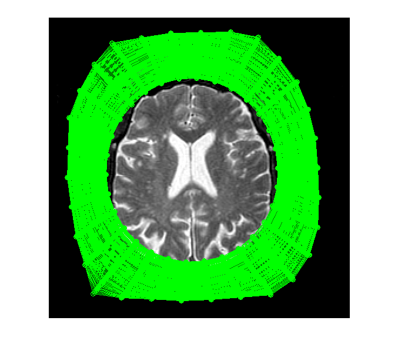
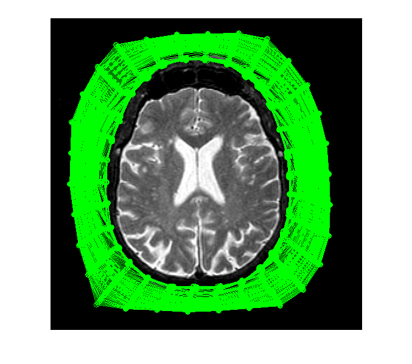
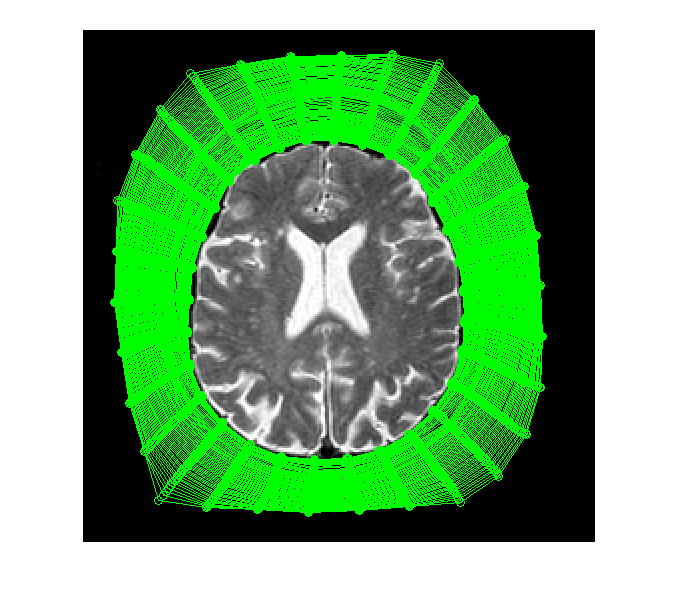

Simple snake demonstration
David Young
Contents
Get an image
Assume the path is set up to include the vision teaching directory.
The image we read in is a brain MR scan. It is from Harvard's Whole Brain Atlas and copyright in it is retained by the WBA.
image = teachimage('head_large.bmp');
f1 = figure; imshow(image);
 Get and display the gradients
gradients is a local function that simply smooths the image with a Gaussian, then with x- and y- differencing masks.
[xg, yg] = gradients(image, 3); figure; subplot(1, 2, 1); imshow(xg, []); subplot(1, 2, 2); imshow(yg, []);
Get a snake
After executing this line, click with the left-hand button to get control points round the outside of the image. Finish by clicking the middle or right button on the final control point.
[xs, ys] = snake_read(image); [xs, ys] = snake_interp(xs, ys, 30); % adjust to have 30 control points figure(f1); imshow(image); snake_show(xs, ys); % An alternative way to get a snake is to call base_snake by % uncommenting the next line % [xs, ys] = snake_base; 
Show the snake shrinking under the elastic force only
The 0.1 argument sets the amount of adjustment caused by the elastic (intrinsic) energy. The zero following sets the extrinsic energy to zero, so the image is ignored. 200 iterations of adjustment are made.
snake_evolve(xs, ys, xg, yg, 0.1, 0, image, 200);
Introduce some image force
The first argument of 200 sets the extrinsic energy to make the snake try to stay on bright stuff. The extrinsic and intrinsic forces balance when the snake tries to move inside the skull.
snake_evolve(xs, ys, xg, yg, 0.1, 200, image, 200);
Change the balance of forces
With a bigger elastic force and a smaller but negative image forces the snake will stop just outside the brain boundary.
snake_evolve(xs, ys, xg, yg, 0.25, -25, image, 200);
Note
The parameter values above work with the test snake and are usually correct for hand-entered snakes that start outside the skull, but if you put your own snake in, you may have to experiment with the parameters.
Experimenting yourself
You can experiment with this demonstration yourself (at Sussex only), by downloading this html document and using Matlab's grabcode function to extract the original M-file. You can then edit it to change the parameters. You can also copy and edit the snake_evolve to allow smoothing as well as shrinking, and you can copy and edit snake_adjust to experiment with alternative energy functions.
This document may be accessible from outside Sussex University, but to use functions from the local library you need to be a student or member of staff of the University.
Copyright University of Sussex, 2006, 2009